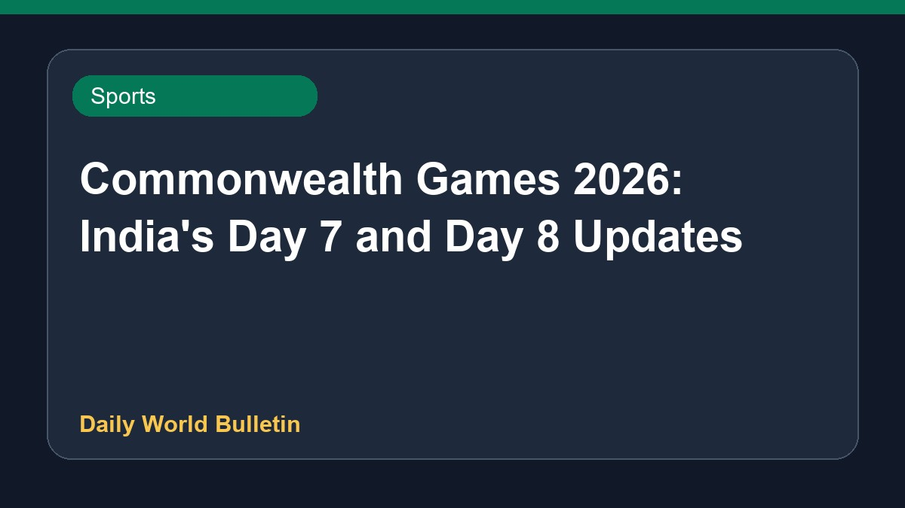

Commonwealth Games 2026: India's Day 7 and Day 8 Updates

At the Commonwealth Games 2026, Indian athletes are in action as coverage follows results and scores. Neeraj Chopra, Rohit Yadav, and Yash Vir Singh have all successfully qualified for the men's javelin throw final. Neeraj Chopra begins his campaign to reclaim the javelin title. The schedule for July 30 features various events, with updates provided across multiple sports sources. Details regarding further results and medal tallies are currently limited based on the available information.
Original source: Sports News Sources
Commonwealth Games 2026 live, July 30: Follow India’s results, scores and updates from Day 7 - olympics.com ↗
Commonwealth Games 2026 live, July 30: Follow India’s results, scores and updates from Day 7 - olympics.com ↗